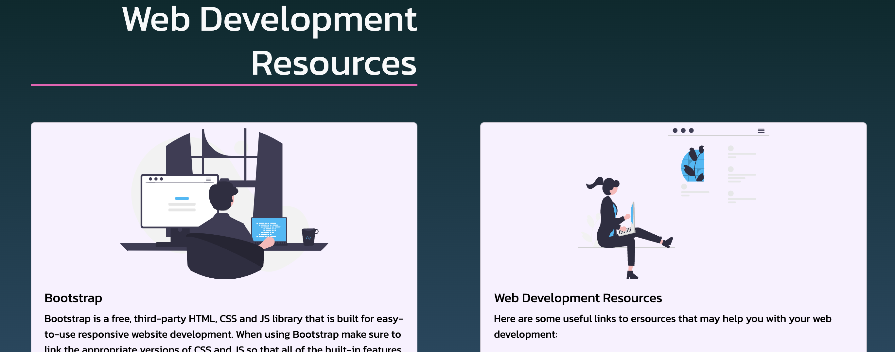

Examples
In the accordion below, there are examples of the usability heuristics. Click on the heading of the accordion to open the small image and description of the heuristic.
These examples are very simplified, but are all examples of very easily used usability heuristics that you will most likely use when you go to develop your own website. This knowledge is very important, particularly for the "Usability" relevant implication and your ability to discuss how you are addressing this.
The following examples of visibility of system status show some of the very subtle but effective uses of this heuristic. It is important to make sure that your users understand where they are within your website as much as possible. We can see in the nav bar that the current page is displayed with a coloured underline. We can also see that in there is a hover effect when the user is hovering over the nav bar link too. This allows them to more easily and efficiently use your website.


Consistency is one of the easiest heuristics to use and identify. The examples here show consistency across the design of different pages. In the example here we some the use on internal consistency where the different pages are sharing many of the same designs and outlines. We also see consistency of colour too.
Scoll on the images to see further
Scoll on the images to see further


Here is another example where you can say that there is some external consistency as well as some internal consistency. The external consistency here is that the nav bar is at the top of the page and so users know that this is usually where the nav bar should be. The internal consistency here is that across all pages, the design and layout of the nav bar doesn't change throughout the rest of the website.
Another example of some internal consistency is between the content of the cards and the different sections of cards that are using similar designs, and layout. The same sections are using the same designs and the two different sections have very similar designs but are also the same as each other showing some great, simplistic use of consistency.
Scoll on the images to see further
Scoll on the images to see further

Although an easy heuristic to identify, being able to create an aesthetic that doesn't just tick the boxes of design principles but comes together as a whole. In the following examples we see the use of a minimalist aesthetic. Content and information is clear. The use of colour and contrast is appropriate and there is just enough ant not too much going on in the page. The images used are also simple and not too over the top. The consistency in the types of images also adds to the aesthetic.
Scoll on the images to see further
Scoll on the images to see further